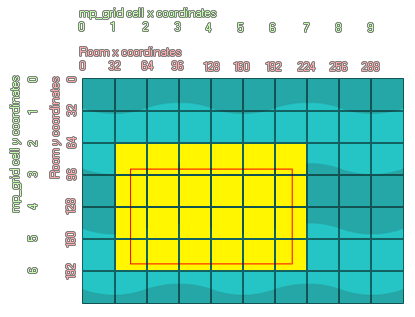

mp_grid_add_rectangle(id, x1, y1, x2, y2);
| Argument | La description |
|---|---|
| id | Index du mp_grid à utiliser |
| x1 | La coordonnée x du côté gauche du rectangle à vérifier. |
| y1 | La coordonnée y de la partie supérieure du rectangle à vérifier. |
| x2 | La coordonnée x du côté droit du rectangle à vérifier. |
| y2 | La coordonnée x du côté inférieur du rectangle à vérifier. |
Retours: N / A
Cette fonction vous demande de définir un rectangle dans la pièce, puis elle marque toutes les cellules mp_grid comme étant interdites, ce qui signifie que les fonctions de recherche de chemin ne peuvent pas les traverser. L'image ci-dessous illustre comment cela fonctionne:

Comme vous pouvez le voir, le rectangle défini par (50, 90) à (200, 180) marque toutes les cellules mp_grid équivalentes qu'il touche comme étant interdites.
mp_grid_add_rectangle(grid, 0, 0, 100,
200);
Le code ci-dessus marquera comme interdit toutes les cellules de la mp_grid indexées dans la variable "grid" qui tombent dans la zone 0,0 à 100,200.